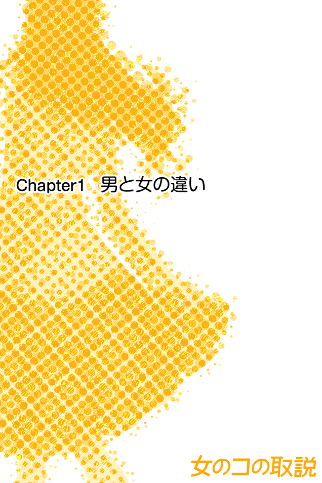
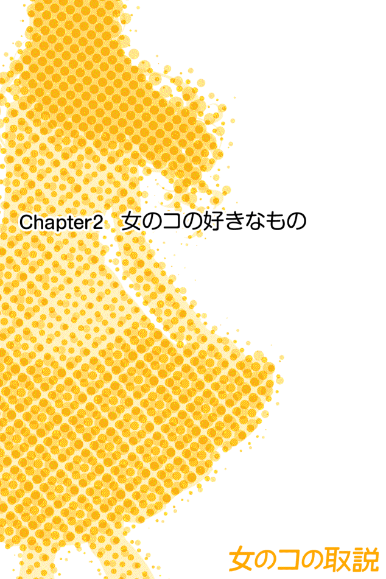
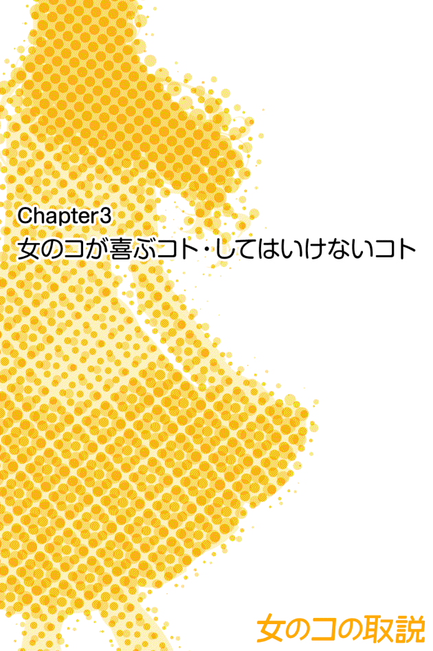
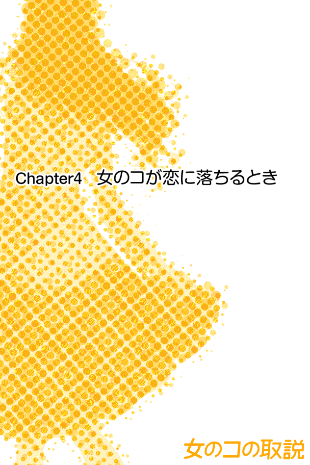

| 女のコの取説 | |
| 桜井結衣 | |
| OpenApps (2013) | |
はじめに
多くの男性は、「女のコって何を考えているのか分からない」と一度は感じたことがあるのではないでしょうか。同じように女性も「男ってわけ分からないわ」と感じることがあります。
同じ人間なのに、男性と女性は違う生き物なのではないかと思うほど、ものの考え方も行動も異なりますよね。それは、男性と女性には根本的に異なるところがあるからです。違う性質のもの同士がうまくコミュニケーションをとるには、その違いについて知る必要があります。
男女では脳の構造が違います。もちろん諸説ありますが、脳に着目して考えると男女の違いが分かりやすいように思います。
そこで、今回は脳から男女の違いをひも解いていきたいと思います。
男女で脳の構造が違えば、男性と女性で考え方も感じ方も違うのは当然です。これでは男性が女性を理解できないのも仕方のない話です。
あなたがよかれと思ってしたことで、女性が不機嫌になったり、デート中いい雰囲気だったのになぜか彼女が昔の話を蒸し返してきて素敵なムードが一転しケンカになったりしたりしたことはありませんか。
「もう女の思考回路も行動もわけが分からない！ だから女はイヤなんだよ。面倒だし、意味不明だし......。」
きっと、そんな思いをしたことがあると思います。ですが、本書を手にとっていただけたということは、心のどこかで「もっとうまく女性とコミュニケーションをとりたい」と思っているからではないでしょうか？
異性とのコミュニケーションを円滑に行うためには、男女の違いを理解することが不可欠です。男性からしたらわけの分からない女性特有の困った事態も、きちんとした知識をもつことで回避することができます。女性に対する理解が深まれば、苦手意識も薄くなり、女性との会話もよりスムーズになります。女性に好印象を与えることもできますし、モテることにもつながります。もちろん、会社での女性社員の扱い方に悩むこともなくなるでしょう。
そのために、まずは Chapter 1 で基本的な男女の脳の違いを簡単に説明します。それをふまえたうえで、Chapter 2 以降では５００人の女性の実態調査の結果をまとめたものをお伝えいたします。
この「女のコの取説」は、「彼女が欲しい」「モテたい」という男性はもちろん、「女性部下への接し方に困っている」という男性にもご覧頂けたらと思います。読み終わる頃には、これまでよりも上手に女性とコミュニケーションをとれるようになっていることでしょう。
本書は男性向けですが、「男女の違いを知りたい」「男性ともっと上手にコミュニケーションをとりたい」という女性にもオススメです。男女の違いを知ることで、男性との気持ちのズレが起こる原因に気づくことができ、よりスムーズにコミュニケーションをとれるようになるはずです。

Chapter 1 では、男女の脳の構造について見ていきましょう。諸説ありますが、男と女の違いは脳に着目して考えると理解しやすいところが多いものです。それぞれの脳の特徴を知ることで、女のコの扱い方が分かりやすくなります。
■男と女では脳の構造が違う!?
男性と女性では体のつくりが違います。脳に関しても違います。男性と女性の脳の一番大きな違いは、右脳と左脳をつなぐ脳梁の形です。女性の脳梁は太くて短く丸みがかっていて、男性の脳梁は細くて長いのです。
これは一体何を意味しているのでしょうか。脳梁とは、右脳と左脳をつないで情報をやりとりする部分です。この部分が太い方が、左右の脳の情報伝達がスムーズに行えますし、一度に多くの情報をやりとりできます。
つまり、脳梁の太い女性の方が男性よりも、一度に色々なことができるということです。もちろん個人差はあります。しかし、テレビを見ながら音楽を聞き、同時にマニキュアを塗りながら電話をするなんていう女性も少なくありません。このように一度に複数のことができるのは、実は女性にはなくてはならない能力でもあります。想像してみてください。もしも、女性が一度に一つのことしかできなかったらどうでしょうか？ たとえば、小さな子どもがいる場合、料理をしているときに子どもに注意を向けられなかったら？ その隙に子どもが転んでしまうかもしれませんし、料理をする母親の真似をしようと煮たった鍋をひっくり返して大火傷してしまうかもしれません。幼い子は、ちょっとでも目を離すとどんな危険が及ぶか分かりません。こうして、小さな子どもの様子を見ながら家事をするという古くから行ってきた行動が、女性の脳を進化させたという説もあります。
では、男性はどうなのでしょうか。男性の脳梁は女性に比べて細いため、女性ほど一度に多くの情報を処理することができません。もちろん個人差がありますが、多くの男性が一つずつ物事を処理していく方が得意なのはそのためです。
たとえば、いつも元気で騒がしい彼女がおとなしかったときに、「静かだ」という一点には気づいても、同時に「彼女の顔色が悪い」ことには気づかないのが男脳です。女脳では、「静かだ」ということと「顔色の悪さ」の両方に同時に気づくことができるのです。
一度に複数のことができる女脳に対し、一つずつ物事を処理していく男脳。決してどちらかに優劣があるわけではありませんが、男女のコミュニケーションにはこの違いが大きく関わってくるのです。
しかしながら、すべての男性が男脳、すべての女性が女脳というように真っ二つには分かれていません。一人の人間の中に「男っぽさ」と「女っぽさ」が同居しているように、「男脳の傾向」と「女脳の傾向」があります。本書では、あくまでも一般的な「男脳」と「女脳」についてお話させていただきます。
■女脳の長所と短所
「女性はよくしゃべる」「口喧嘩では女性に勝てない」などと言いますよね。これは実は女性の脳の構造のせいだったのです。女性は右脳と左脳をつなぐ脳梁が太いため、会話をするときに脳全体を使って同時に複数のことを考えます。一度に大量の情報を混ぜながら考えて、感じたことがすぐ言葉になって出てしまうので話がまとまりにくい傾向があります。同時に複数のことを考えているため、途中で関係ないことも入ってきて非常によくしゃべります。口喧嘩の最中に文句を言いながら昔のことまで思い出して攻撃するのもこのためです。これらは、すべて脳梁が太いせいなのです。
この脳梁が太いおかげで会話中に話の内容だけでなく、相手の表情やしぐさや声色なども自然と気にかけることができます。このため、子どものちょっとした変化にも気づきますし、周りの人に共感して打ち解けることにも長けているのです。また、先述のように、電話をしながらネイルの手入れをしたりと同時に複数のことができます。
ところが、色々なことを同時に処理できるがゆえに、女性には何か一つのことに没頭するのが苦手だという側面があります。そのため、男性のようにゲームにハマったり、一つのことに集中して研究したりする女性は少ないといいます。
「男脳」と「女脳」の違いがお分かりいただけたでしょうか？ この脳の違いによって、男女の考え方の違いが生まれます。次に、それぞれの思考パターンについてお話します。
■男脳の長所と短所
一般的に、男性は一つずつ物事を処理していくため熱中しやすい傾向にあります。一つのことを深く掘り下げて研究したり、集中して行うことが得意であり、長所です。しかし、熱くなり過ぎると周りが見えなくなって突っ走ってしまうという短所もあります。怒りで我を忘れて殴ってしまったり、気になる女性から少し優しくされただけで両想いだと思い込んでしまったりするのも、男性が一つのことに集中する傾向にあるためです。です。野球中継を見ているときに話しかけられると、とっさに反応できなかったりするのもこのためです。
また、一般的に男性の方が女性よりも空間認識能力が高いと言われますが、これには二つの説があります。一つは、狩猟時代に狩りをして右脳が進化した結果、空間認識能力が高くなったため。もう一つは、胎児のときに浴びる男性ホルモンが左脳（言語能力・計算能力などを司る）の発達を抑えるはたらきがあるため。この胎児期に浴びる男性ホルモンですが、多く浴びるほど男脳になるといいます。そして、左脳の発達がおさえられることで右脳が発達しやすくなります。実際に、男性には右脳の方が左脳よりも大きい人が多いそうです。右脳は、空間認識力・図形処理能力を司っているため、一般的に、男性の方が地図をよむのが得意だったり、距離感がすぐれていたりします。男性に方向オンチの人が少ないのはこのためです。
■女が感情的な理由
女性が感情的で非論理的になりやすいのは、会話をしているときに言語中枢以外のところも使っているからです。このため、あらゆる情報が混ざり合ってしまい、理論立てた話ができなくなる傾向があるからだと言われています。そんな情報過多の中で、女性は感情を重視します。
たとえば、靴を買いに行ったのに、靴売り場でふと「この靴に合う新しい服も必要だ」と思い、服も欲しくなったりします。そこで服売り場へ行ってみると、目移りするほどカワイイ服が多くて「あれも欲しいけど、これも欲しい。でも、今月お財布が厳しいんだった。別に今買わなくてもいいかも。でも靴買わなきゃ。そしたら服も欲しいし......。ああ、もうどうしたらいいか分からない。もうやだ、帰ろう。」と悩んだ挙げ句、結局何も買わずに帰って来てしまうという女性も少なくありません。
脳全体を使って同時に複数のことを考える女性は、考えれば考えるほど情報があふれてきて、思考が追いつかなくなってしまいます。そこで、仕方がないので感情に従うことになるのです。これが、女性が感情的だと言われる原因です。
同じ買い物でも、男性の場合は、靴を買うと決めて行ったら靴だけを買って帰って来ます。目的を達成するために一直線に働く男脳のためです。
また、仕事で泣く女性が理解できないという話をたまに聞きますが、これも女脳の構造に原因があります。一度に大量の情報であふれかえる女性の脳は、複雑な感情の渦を巻き起こします。何か仕事で失敗したとき、女性の脳にあふれているのは次のようなことです。
つらい、悲しい、自分のふがいなさが恥ずかしい、ここで泣いたらだめだ、でもしんどい、迷惑をかけてしまって申し訳ない、どうしよう、なんとかしなければ、どうしよう、どうしてこんなに自分はだめなのだろう、このままではクビになってしまうかも、もうだめだ、つらい、どうしよう......と、エンドレスに大量の情報とそれによって引き起こされた大量の感情がぐるぐると渦のように女性を襲います。それに耐えられなくなり、思わず涙が出てしまうのです。
このように、女性の判断は最終的に感情で行われやすいため、女性は感情を大事にします。他人と親しくなるときも、感情を共有することがポイントになります。
そこで、女性が感情的になったときの対策ですが、同調することです。喜んでいるときも悲しんでいるときも、彼女の気持ちを汲み取り同調しましょう。それだけで、女性はあなたと気持ちを分かち合えているように感じます。ただし、女性があまりに怒っているときは、同調でもなく無視することでもなく、おおらかに受け止めることです。怒りたいだけ気の済むまで怒らせてあげればいいのです。そうすることで、女性はあなたが「自分を守ってくれる人」「自分の味方」だと感じて安心するのです。
女性にとって感情がいかに大切か、女脳の構造と合わせて考えると分かりやすいですよね。
■オチなし意図不明トークをする女
「あのね、昨日友達のユミが彼氏とケンカしちゃって、それですっごいムカついてヤケ食いしたんだって。それ聞いて、なんとなく私もヤケ食いしちゃった～。あ、そう言えば新しくできたお店行った？ まだだったら行ってみる？ あ～、でも、映画観たいかも～」
このような男性からしたら一体何を言いたいのか、結論は何なのか分からないトークをする女性って多いですよね。話の核もなければゴールもない。男性には、どう聞いてどう返せばいいのか非常に困ってしまうトークだと思います。
なぜ女性はこのようなトークをするのでしょうか？ 繰り返しになりますが、女性の脳は一度に大量の情報を処理しようとします。ところが、あまりに多くの情報があふれてくると処理が追いつきません。考えがまとまらないから、口に出してしまうのです。そうやって口に出しながら考えていくので、このようなオチもなければ意図も不明なトークになってしまうのです。
ところが、このトーク、女性同士だと何の問題もなく実にスムーズに進みます。なぜなら、口に出しながら考えていく者同士だからです。口から出た言葉にその場その場で反射的に反応する会話が女性同士の会話といっても過言ではないでしょう。女性同士の会話には、男性のように話の結論を求めることも、現状の立ち位置を確認することも重要ではありません。重要なのは、その場のフィーリングを合わせることなのです。テンポよくリアルタイムに感情を共有して、一緒に盛り上がること、とにかく気持ちをシンクロさせることが大事です。
というのは、女性は大昔に植物を採集していたときから女性同士のコミュニティ内での意思疎通・情報共有を頻繁にしてきたからです。「この実は食べても安全か」だとか「あのキノコは毒があるから危険だ」といった情報を共有しないと生命に関わります。女性同士の情報交換が必要でしたから、当然、互いに共感して親しくなる能力も磨かれていきます。歴史的にも女性の人間関係は気持ちをシンクロさせることに重点がおかれていたと考えられます。
このように、男女では会話に求めるものも、会話のスタンスもまったく異なります。
これでは、口喧嘩をしたら男性が女性に勝てるわけがありません。なぜなら、男性が考えをまとめようとしている間に、女性は口に出しながら攻撃するのですから。男性が何をどう言おうか熟慮している間に、女性はたとえ支離滅裂であっても攻撃の言葉を乱れ撃ち、気づいた頃には男性はボロボロになって崖っぷちに立たされているなんてことも少なくないでしょう。ケンカのときは仕方がないので、女性の感情の波がおさまるまで言わせてしまうのも一つの手かもしれません。女性の感情の波がおさまる頃には、男性の考えもまとまっているはずですから、そこで優しく諭すように話すのが建設的なやりとりになると思います。間違っても、興奮する女性に触発されて怒鳴ったり手を上げたりしてはいけません。そんなことをしては火に油です。
ケンカはさておき、日常会話でも男性は女性の意図することが分からないと言います。たとえば、冬に外を歩いていて女性が「寒い」と言ったら？ それは単に気温に対しての感想なのか、手をにぎってほしいというアピールなのか、早く店に入ってあったまりたいのか。一体何なのか、どうしてほしいのか分からなくて男性は困ってしまいます。女性は男性ほど考えてから言葉にしないので、あまり気にしないでも大丈夫です。しかし、「ちゃんと聞いてるよ」という意思表示は忘れないでください。その上で、気になる場合は相手との関係に合わせた返しをするのがベストです。たとえば、相手が恋人なら「寒いの？ 手つなぐ？」だとかダイレクトに聞くのが一番誤解を招かないで済みます。
他にも、特別な意味はないけれど、女性は自分の予定を考えていて、それをただ言ってしまうだけという場合も多いものです。たとえば、友達同士の間柄でこんなやりとりを経験したことのある人はいませんか？ ２つの例を挙げますね。
【その１】
女「土曜日ヒマなの～」
男「じゃあどっか行く？」
女「ん～でも何か予定入るかもしれないし～疲れて寝ていたいかもしれないし～」
【その２】
女「そろそろ髪切ろうかな？」
男「いいんじゃない？」
女「でも、伸ばしたい気もするし......ん～どうしよう～やっぱりまた今度考えようっと」
この２つの例、男性はきっとどちらも「何なんだー！ 一体、俺にどうしろっていうんだ!?」とお思いでしょう。これは女性の脳梁が太いために同時に複数のことを考えてしまうせいなのです。一度に大量の情報を混ぜながら考えて、感じたことがすぐに言葉になって出てしまうために、このような意図不明のトークをしてしまうのです。そこに特別な意味はないことが多いので、男性の皆様は「うんうん、聞いてるよ」という姿勢でいてくれればそれだけで女性は満足なのです。間違っても、「で？ 結局何が言いたいの？ その話、俺に言う意味あるの？」なんて言わないでくださいね。ケンカのもとになってしまいます。
■女の嗅覚が鋭い理由
女性の嗅覚は男性より約20パーセント強いと言われています。なぜ女性の方が嗅覚が鋭いのでしょうか？
それは、自分がもっていない遺伝子をもつ男性を見つけるために女性に備わっている本能なのです。というのも、生物は自分と異なる遺伝子をもつ相手と交配することで、より強い生命力を持った子孫を残すことができるからです。
においフェチの女性が多いのも、嗅覚が鋭いゆえのことだといえます。「彼のにおいが好き」という女性は遺伝子レベルでその男性を求めているということになります。
そして、思春期の女の子が父親をクサイと言って嫌がるのも実に理にかなっていることなのです。近親者の遺伝子を求めてしまっては大変ですからね。ちょっと悲しいことかもしれませんが、父親をクサイと思うのも本能なのです。
また、出産した女性がそれまで大好きだった夫のにおいを突如としてクサイと思ってしまうのも、悲しいことに本能のせいなのです。女性は自分のおなかの中で育てた子どもを外敵から守るために、自分と子ども以外のにおいに敏感になります。この外敵センサーはパートナーの男性にも向けられてしまいます。そのために、子どもができると女性はあらゆるにおいに敏感になるのです。妊婦さんが電車に乗ると、酔っ払いの男性のにおいや高校生の汗のにおいに気分が悪くなって途中下車せざるを得ないという話もよく聞きます。
より強い子孫を残すため、子どもを守るために、女性には鋭い嗅覚が備わっているのです。
■男が理屈っぽい理由
男性は、会話をするときに、ほぼ言語中枢がある左脳だけを使います。そのため、男性は理論立てて必要なことを話そうとします。会話の際に、「話の結論・結論までの道筋・現在の状況」を明確にすることを重視します。このような話し方は、相手に何かを説明するときに威力を発揮します。無駄がなく筋の通った話し方は、聞き手にとって分かりやすいものです。ただ、一度話のゴールを決めたらそこに向かって一直線に理論を進めていくため、どうしても理屈っぽくなりがちです。
また、男性は会話の内容に集中するので、よほど注意して意識を向けていないと相手の表情やしぐさや声色の変化には気づきません。
女性と違って男性の場合は、「会話するときに使う部分」と「感情的になる部分」が脳の中で区分けされているので会話中に感情的になりにくい傾向があります。言い換えれば、直感的な会話が苦手ということになります。女性が「カワイイ」とか「なんかイイよね」といった感覚を重視して話すのに対し、男性は数値やグラフや表といったデータを重視する傾向にあります。
そんな男性の話し方が、時として女性にとっては「理屈っぽくて面白くない」「話が長い」と感じられてしまいます。女性相手に話すときは、多少でも感情的なフレーズを織り交ぜると効果的です。
反対に、女性が男性に向かって話すときには、データによる根拠があると男性の興味をひきやすくなります。
■「付き合う前に燃える男」と「付き合ってから好きになる女」
付き合う前はマメに電話もメールもくれて、デートプランも毎回しっかり考えてレストランも予約してくれた男性が、付き合ってから連絡も少なくなりデートにも計画性がなくなったというのはよくある話です。
女性の方は反対に、付き合う前はそれほど気持ちが盛り上がっていなかったのに、付き合いだしてからなぜか恋人をすごく好きになって執着しているのをよく見ます。
これは、なにも男性が好きな女性を手に入れて気が緩んだからというわけではありません。付き合う前、つまりまだ彼女を手に入れていないとき、男性はとにかく「彼女と付き合いたい」という目標に向かって一直線に進みます。この「ゴールへ真っ直ぐに向かう」思考パターンはまさに男脳のなせるものです。ゴールするまでは一生懸命にあの手この手で一心不乱に頑張ります。
ところが、「彼女と付き合う」というゴールに着いてしまうと、それまでの努力をする必要性がなくなってしまうのです。もちろん、付き合い続けるための最低限の努力はしますが、目標を達成するまでに見せていた気合いや頑張りは薄れていきます。それが女性にとっては、「付き合ってから、彼は私に対して手抜きになってきた。私に対する愛情がなくなった気がする」という「釣った魚にエサをやらない」感を与えてしまうのです。
それに対して女性は、付き合い始めたばかりの頃はまだ恋心に火が点いていないことが多いもの。いつ火が点くのかというと、体の関係をもってからなのです。これには理由があります。体の関係をもつということは妊娠の可能性を意味します。妊娠の可能性を感じると、動物として、本能的に子どもと自分を守ってもらうためのオスを求めるようになります。ここが女性の恋心の着火点なのです。一夜を共にしてから彼女の束縛がきつくなったという経験のある方もいるでしょう。それはまさに女性の本能のせいなのです。妊娠の可能性のある相手を女性は本能的に逃がさないようにします。しかし、これがあまりに度を超えると、男性の恋心がみるみる冷めていく原因になってしまいます。
男性と女性では気持ちが高まる時期にズレがあります。ですが、それは仕方がないことなので、そういうものだと理解して、互いの気持ちがうまくバランスをとれるように付き合っていきたいものですね。
■「自立する男」と「従属する女」
男女の脳の違いに着目して考えた場合、子育てでも部下を育てる場合でも、男女別に効果的な方法があります。これまでお話してきたように、男性は目標に向かって論理的に考えて進んでいこうとします。女性は、同時に複数のことを考えながら感情に重点をおいて行動します。
これらの違いをふまえて、男性には目標を達成するための簡単なポイントと筋道を伝えて、あとは自分で考えるようにさせるのがいいでしょう。そうすることで、自ら考え行動する力がついていきます。
しかし、女性は目標へ向かおうとしても、色々なことが頭をかすめその都度不安になってしまいます。「これで本当に正しいのかな？」「もしかして指示を聞き間違えていたりしないかな？」と色々と心配になってしまうのです。この不安を拭ってあげることこそが親や上司がすべき大事なことです。ちょっと面倒に感じるかもしれませんが、女性が何かを考えて不安になっているようだったら、「大丈夫？」「いいね。その調子でね」などと声をかけてあげてください。この声がけだけで、女性は安心します。同時に複数のことを考えてしまうゆえに自分の行動にも迷いが生じやすいため、逐一「それで大丈夫だよ」と確認してもらえると、とてもほっとするのです。
「論理的な説明で独り立ちする男性」と「逐一ＯＫサインの必要な女性」、部下のいる方はぜひ頭の片隅に置いておいてください。

Chapter 2 では女のコの好きなものを知ることで、女性へのアプローチに役立てていきましょう。女のコの好きなものが分かっていれば、それを話題にして女のコとの会話を楽しく続けることができます。また、女のコに好意をアピールできるだけでなく、女性社員のモチベーションを上げることもできます。
■甘いものが好きな女性が多い理由
女性って甘いものを好んで食べるイメージがありますよね。これには３つの理由が考えられています。
まず、１つ目です。人間は嬉しいことがあると「β‐エンドルフィン」が分泌されます。この「β‐エンドルフィン」は脳内麻薬とも呼ばれ、多幸感をもたらします。実は男性に比べて女性の方が、甘いものを食べたときに「β‐エンドルフィン」がより多く分泌されるのです。つまり、女性は甘いものを食べると、とても幸せに感じるということです。このため何度も甘いものを食べていくうちに、女性は「甘いものを食べると幸せになる」と経験的に学習します。そうして甘いものを好むようになっていくのです。（もちろん、女性でも甘いものが苦手という人もいますから、個人差はあります。）
次に、２つ目です。昔から子育てをする際に子どもに栄養のある高カロリーなものを与えるために、女性はカロリーの高い甘いものに敏感になって進化してきたという説もあります。母親が子どもと同じ味覚である方が、子どもに与えるべき食物を選別しやすかったということですね。
３つ目の理由は、女性の体にあります。女性は毎月、月経が近づくと低血糖になって、イライラしてしまいます。そのイライラを解消するために、精神を安定させる脳内物質セロトニンの分泌を促進する甘いものが無性に食べたくなるのです。
これら３つの理由で、女性には甘いものが好きな人が多いのです。交際前なら、ぜひ気になる女性をケーキが美味しいカフェに誘ってみてください。ディナーに誘うよりもハードルが低いですし、誘われた方もカフェなら気軽に行きやすいものです。もちろん、付き合ってからのデートでもスウィーツを食べに行くのはオススメですよ。甘いものを食べて幸せ気分になった彼女といつも以上にあたたかい時間を過ごせるでしょう。
■５つのＫ
女性が好きなものといえば、「５つのＫ」です。それは、「キラキラしたもの」「カワイイもの」「キレイなもの」「買い物」「記念日」の５つのＫからはじまるものです。
はじめの３つ「キラキラしたもの」「カワイイもの」「キレイなもの」は、見るだけでも幸せな気分になる女性が多くいます。
「キラキラしたもの」といっても、なにも宝石だけではありません。イルミネーションや夜景もそうです。「カワイイもの」といわれても、男性はよく分からなくて困ってしまうかもしれませんね。男性からすると、女性は何を見ても「カワイイ～！」と言っているイメージがあるようです。こればかりは個人の感覚なので一概にはいえませんが、一般的に多くの女性がカワイイと言うものはピンクのもの、花柄、リボン、フリル、レース、キャラクターもの、小動物でしょう。「キレイなもの」は「カワイイもの」と似ていますが、「カワイイもの」よりシャープな対象を指します。
「キラキラしたもの」「カワイイもの」「キレイなもの」を見ると、それだけで女性は癒されて幸せな気分になれるのです。いまいちピンとこないという方のためにちょっとした例を挙げますね。ゴキブリは気持ち悪いですよね？ では、子犬や子猫はカワイイと思いませんか？ そういった感覚的なことなのです。
さて、４つ目の「買い物」ですが、男性は何か「コレ」といった欲しいものがないと買い物に行かない人が多いようです。しかし、女性は目的がなくても、特別欲しいものがなくても、買い物に行くと楽しくなる人が多いのです。売り場に並んだ色々なものを見たり、手にとって試してみたりするだけでワクワクして楽しくなります。
そして、５つ目の「記念日」。これをやっかいだと思う男性は多いようです。誕生日やクリスマス、交際○か月記念日など細かく挙げればいくらでも出てくる記念日。男性が困るのも知らずに、やたらと記念日を作りたがる女性もいます。
これには理由があります。女性は「特別感」が大好きなのです。記念日とは、「自分と恋人の二人だけの特別な日」です。そのため、忘れずにしっかりとスペシャルに祝いたいと考えます。理屈ではないので、男性にはなかなか理解していただけないかもしれませんが、女性にとって「記念日」はとにかく特別なものだと覚えておいていただきたいのです。記念日を無視されたのが原因で「自分は大切に思われていない」と深刻に考えて別れてしまう女性もいるくらいです。
ですが、女性だって男性が仕事で忙しいのは百も承知です。「なにがなんでも記念日当日一緒にいたい！ お祝いしたい！」とは思っていません。やむを得ない理由なら、当日ではなくても多少ズレても仕方ないと思っています。
大事なのは、「忘れずにきちんと覚えている」という意思表示です。当日が無理なら「ごめん、どうしてもはずせない仕事があるから翌日になってもいい？ ちゃんとお祝いしよう」などと一言伝えれば大丈夫です。あとは一緒にいられなくても、記念日当日に短くても「誕生日おめでとう」などとメールや電話を忘れなければＯＫです。男性は記念日がそれほど重要だと感じない人も多いため、ちょっと面倒に感じるかもしれません。それでも、大好きな相手が喜ぶと思って付き合ってあげてください。女性は記念日を忘れずにいてくれるだけで「私のことをちゃんと気にかけてくれている」「大切にされている」と、とっても嬉しくなるのです。
女性が好きな「５つのＫ」、少しでもご理解いただけたら幸いです。「５つのＫ」を知っていれば、ケンカを防ぐことや彼女の機嫌をよくすること、好きな女性にアピールすることにつながるはずです。女性と接するときに、ほんの少し意識してみるのもいいかもしれません。
■おしゃべり
男性に比べて、女性はよくしゃべりますよね。一日の会話量は、男性が二千～四千語、女性が六千～八千語と言われています。
どうして女性はよくしゃべるのでしょうか。
それは、これまでお話してきたように脳の構造によるものなのです。女性は男性よりも右脳と左脳をつなぐ脳梁が太いため、一度に複数のことができます。この差は会話中にも表れます。男性の会話は主に情報交換のために行われ、筋道を立てて一つずつ順番に話していきます。女性の会話はストレス発散や他人との関係を構築するために行われ、自ら話しながら相手の話を聞き、考えるというよりも反射のように言葉を発します。
女性は人間関係を築くために話すので、会話において情報の有益性よりも、互いに感情を共有することに価値をおきます。男性に分かっていただきたいのは、この部分なのです。
よく、女性は「私はあの映画にすごく感動したのに、Ａちゃんは全然面白くないって言うの。ひどくない？」とか「この服カワイイと思うのに、Ｂちゃんはダサイって言うの。ひどいよね」なんて言いますよね。感情を共有できないとき、女性は寂しさを感じてしまうのです。
女性は会話中に共感することによって人間関係を深めていきます。そのため、友人や恋人など好きな人・信頼している人に対して、誰よりも共感したいし共感してほしいと願います。
女性から悩み相談された男性がすぐに解決策を提示すると「冷たい」と思われてしまうのも、この女性の特性のためです。落ち込んでいる女性から何か相談されたら、まずは女性の気持ちを受け止めてあげてください。男性の脳は困ったことがあれば問題を解決しようと真っ直ぐに進みがちですが、相手が女性の場合は問題を解決するより先に「大変だね」「つらいのに、よくがんばったね」などと彼女の気持ちを受け止めることが大事です。たった一言でも女性の気持ちを汲んだ言葉を言うだけで、相手はあなたのことを「自分を分かってくれる優しい人」だと思います。それだけで彼女は心を許してしまうこともあるでしょう。
とにかく共感し合いたいのが女性です。おしゃべりしながら他者と気持ちを共有することで女性はストレスを解消し、絆を深め、安心感まで得るのです。おしゃべりは女性にとってなくてはならないものなのです。男性は面倒くさがらずに女性の話を聞いてあげてくださいね。あまり話すのが得意じゃないという男性は、体ごと相手に向けて「うんうん」というあいづちだけでもいいので、「君の話をちゃんと聞いてるよ」というアピールだけでもしてみてください。それだけで、女性の反応は変わりますよ。
■ＭＡＭＵな人
女性が好きなのは、ズバリ「ＭＡＭＵな人」です。
Ｍ：マメな人
Ａ：甘えさせてくれる人
Ｍ：守ってくれる人
Ｕ：受け入れてくれる人
この四つ、すべて仕事でもプライベートでも当てはまります。一つずつ説明しますね。
Ｍ（マメな人）ですが、たとえばくしゃみをしたらエアコンを調節してくれたり、帰り際に「寒いから風邪ひかないでね」と言ってくれたり、仕事中に上司が「分からないことない？ また様子を見に来るから何かあったら遠慮なく言ってね」などとマメに気にかけてくれる人のことです。後で詳しく書きますが、女性は男性よりも不安になりやすいのです。というのも、「脳の不安中枢」と呼ばれる前帯状皮質が、女性は男性よりも大きいからです。不安な状態は誰でも居心地が悪いものですよね。不安を感じやすい女性が安心するには、マメに気にかけてもらうことです。そのため、安心させてくれるマメな人が好きなのです。
Ａ（甘えさせてくれる人）ですが、これを一言で言うと「包容力」になります。女性が望む包容力とは、「愛情たっぷりで柔軟な理解と余裕のある優しい気持ちと態度」です。たとえば、仕事の場面では、残業続きのときに上司が差し入れをくれたり、「部下が頑張っているなら俺も頑張らなきゃいけないな」などと言いつつ仕事を手伝ってくれたり、体調が悪いのを気にかけて「あとはやっておくから帰りなさい」なんて程良く甘えさせてくれる人のことです。恋人同士なら、疲れたときや仕事で頑張ったときに「よしよし」と優しく頭を撫でたりハグしてくれたりといったことが女心に響きます。簡単に言うと、女性の気持ちを汲んで優しく甘えさせてくれると愛情を感じるという女性が多いのです。
Ｍ（守ってくれる人）といっても、大袈裟なことではありません。重い物をもってくれたり、固いビンのフタを開けてくれたり、高いところの物をヒョイと取ってくれたりといった日常のプチ困難からサッと守ってくれるだけで女性は嬉しくなるのです。これはやはり男女の体格差が要因となっています。体格以外にも、脳の違いを活かして道を教えてくれることも「守ってくれる」のうちの一つです。男性が女性を守る場面は、日常の中にいくらでも転がっています。気になる女性にアピールするにはもってこいですね。
最後に、Ｕ（受け入れてくれる人）ですが、仕事の相談をしっかりと聞いて親身になってアドバイスをくれたり、自分の弱いところやダメなところも受け入れてもらえたりすると女性はグッときます。「私のことを分かってくれている」と実感して安心できるからです。彼女のありのままを丸ごと受け入れるというとものすごい偉業のように聞こえますが、すべての女性がそこまで望んでいるわけではありません。ほんの少し個性を認める程度でもいいのです。具体的な例を挙げると「傷つきやすい繊細なところ」だったり、「世間知らずで純朴過ぎるところ」だったり人それぞれあると思います。そんな短所のような個性を「○○ちゃんはナイーブだから心配だよ」とか、「○○ちゃんのピュアなところって素敵だと思う」とか、理解した上で受け入れてもらうと、多くの女性は安心感とほっとするような嬉しさを感じます。
女性が好きなのは「ＭＡＭＵな人」。ぜひビジネスでも恋愛でも、女性と円滑なコミュニケーションをとるために効果的にＭＡＭＵな振る舞いをしてください。
■好きな人を支えること
一般的に多くの女性は、好きな人の世話を焼いたり、支えたりしたいと思います。これは人を好きになるのと同じくらい自然な感情なのです。恋人が疲れていたら癒したい、悩んでいたら気持ちが少しでも軽くなるようにしたいと真剣に考えるのはもちろん、尊敬する上司のサポートをして支えたいとも自然と思います。女性は男性を支えて役に立って、必要とされることで心が満たされます。女性の部下がいる方は、指導次第で彼女たちは大きな戦力になるので、ぜひ大切に育ててあげてください。
しかし、恋愛において、ときにその支えたい気持ちが男性の重荷になってしまうこともあるようです。特に若いうちは恋愛経験も少ないので加減が分からず、まるで母親のように世話を焼く女性もいます。こうなってくると、男性はその女性を徐々にうっとうしく感じてしまうようです。ましてや、本当に身も心もクタクタなときは一人になりたいと思う男性も多いもの。そんな男性の気持ちに気がつかずに良かれと思って尽くす女性は、可哀想なことにフラれてしまったり浮気されてしまったりということもあります。
たしかに、度を超えて尽くしたいと思うのは女性のエゴかもしれません。しかし、「好きだから支えたい、尽くしたいと思う」ということも男性に分かってほしい点でもあります。（もちろん、相手に合わせるバランス感が大切なのですが。）
こんなに支えてもらって悪いな～なんて心苦しく感じるときは、「いつもありがとう」と言ってくれるだけでいいのです。女性はその一言が聞けるだけで、自分が好きな人の役に立っていると実感でき、幸せを感じられるのです。
■愛情を実感すること
女性は好きな人からの愛情を実感することが大好きです。愛情を感じられないと寂しくなり、孤独感さえ感じてしまいます。
では、どういったときに愛情を感じるのでしょうか？
女性は相手からのメールや電話やデートの回数の多さ、日々の思いやりある言動の多さで愛情の度合いを感じ取ります。そのため、相手からの連絡が少なくなったり、これまで言われていたのに愛の言葉や感謝の気持ちを言われなくなったりすると不安で仕方がなくなってしまいます。
しかし、男性がパートナーの女性に愛情を注いだと思うことは、高価なプレゼントを贈ったとか、長期間の旅行を一緒にしたとか、頻度ではなくスケールの大きいもので愛は伝わると考える傾向にあるといいます。
このように男女間では愛情の伝わり方にズレがあります。男女では体の構造も違うのですから、ズレがあるのは仕方がないことです。このズレをどう埋めていこうとするかが大事なのです。
これは一つの考え方ですが、高価なプレゼントを頑張って一度だけ贈るよりも、毎日「カワイイね」「好きだよ」といった愛の言葉を伝える方が彼女が喜ぶならば、日々の言葉と気遣いをした方が二人の関係にもお財布にもいいのではないかと思います。
■「カワイイ」と言われること
単純なようですが、多くの女性が言われると嬉しいのは「カワイイ」という言葉です。この「カワイイ」という言葉は、魔法のように女性をハッピーな気分にしてくれます。
女性は小さい頃から自分の容姿を気にするものです。それをほめられてイヤな気分になる人はいません。好きな男性に言われたら嬉しくてテンションが急上昇するのはもちろん、特に意識していない男性から言われてもついドキッとしてしまいます。
「カワイイ」という言葉は、容姿をほめる以外に性格や仕草、アイテムにも使えますから、シャイな男性は気になる女性のふとした仕草から「カワイイ」と言ってみるのもいいかもしれません。女性は容姿だけでなく、自分の性格や仕草や服装や持ち物などあらゆるものを「カワイイ」と言われると嬉しくなるので、安心して言って大丈夫ですよ。
それに、「カワイイ」と言われると、言われた女性はもっと「カワイイ」と言われたくなるため、さらに努力して実際にどんどん可愛くなっていきます。
男性は恥ずかしがらずに、ぜひ気軽に「カワイイ」と言ってみてください。

Chapter 3 では、これまでの「男と女の違い」「女のコの好きなもの」をふまえて、「女のコが喜ぶコト・してはいけないコト」を詳しく見ていきましょう。これまでの２つの Chapter の確認にもなりますので、思い出しながら読んでみてくださいね。繰り返しのように感じることも、大切なのであえてしつこく書かせていただきました。ご了承くださいませ。
■共感
女性の会話は他者との共感を得るために行われていると言ってもいいでしょう。女性にとって、喜怒哀楽の感情を共有することこそが相手との絆を強くすることにつながるのです。
女性は男性に比べて共感能力が高いと言われています。「悲しい映像を見せたときの大脳辺縁系の血液量は、女性の方が男性の８倍も多い」というアメリカの研究結果があります。大脳辺縁系とは、情動の表出を司る脳の部位のことです。その大脳辺縁系の血液量が多いということは、感情が動かされていることを意味します。つまり、女性は男性の８倍も相手に共感しているということです。だから、よく泣いたり笑ったりしますし、おしゃべりが続くのです。
女性は、感情を共有することが大事なコミュニケーションだと考えています。そのため、共感できないと強いストレスを感じてしまいます。共感できないと相手と分かり合えていないと思い、強い寂しさを感じてしまうのです。
特に、身近な人や好きな人とは感情を共有したいと思うので、女性が感情的になったときほどじっくりと話を聞いてあげてください。何事も論理的に考える男性ほど、感情的な女性を見ると一刻も早く冷静になってもらおうと、女性を落ち着かせようとします。しかし、そんな男性の行動は女性の目には「自分に共感してくれない」「分かり合えない冷たい人」と映ってしまいます。
女性が感情的になったときは、ひとまず彼女の中で渦巻いている感情を吐き出させてあげましょう。渦巻く感情を聞いてあげるだけで、女性は「感情を共有できた」「私のことを理解してくれた」と感じ、心が満たされます。広い懐で受け止めてもらえたことで、安心感や大きな愛情を感じる女性もいるでしょう。それほどまでに、女性にとって共感する・共感してもらうということは大事なことなのです。
■放置
昔、ドラマで「ウサギは寂しいと死んじゃう」というセリフがありましたが（真偽のほどはさておき）、女性は放置されると死ぬということはありませんが、交際相手からあまりに放置されると心が傷だらけになって他の男性のもとへ行ってしまうことはあります。
というのも、女性は常に愛されている実感がほしいものだからです。自分は愛されていないと強く感じると、それが原因でうつ病になってしまうこともあります。女性にとって、愛されたいのに愛されないという思いはひどい孤独感、ひいては絶望感まで引き起こします。
「自分は孤独な存在じゃない」「自分は大切にされている」「自分は愛されている」と実感することこそが、女性の幸福なのです。「愛されているという確信」「自分が愛される価値のある人間であるという確信」が女性の心を支えるのです。
そんな女性を放置したらどうなるでしょうか。放置とは、なにもしばらく音信不通で会わないということではありません。会っていても、まともに話を聞かなかったり、スキンシップがなかったり、まるで透明人間のように扱うことも立派な放置です。もちろん、長い付き合いで信頼関係がしっかりと構築されている場合は多少のことなら話は別ですが、放置されれば大抵の場合は愛されていると実感できずに孤独感にさいなまれてしまいます。その結果、愛情を注いでくれない恋人よりも、分かりやすく愛されていると実感させてくれる別の男性の方へ行ってしまうのは実にあり得る話なのです。
分かりやすく愛情を注ぐのが苦手な男性が多いことを女性も知っています。しかし、どんなに不器用でもいいので、大切な相手には愛情を伝えてください。愛情を実感できずに彼女の心が死んでしまっては手遅れなのです。「愛している」と言うのがどうしても恥ずかしくてできないなら、「いつもありがとう」という感謝の言葉を伝えるだけでもいいのです。情熱的に抱きしめることができないなら、ぎゅっと手を握りしめるだけでもいいのです。
男性だって、大切な女性には幸せでいてほしいものだと思います。ほんのちょっとの勇気で愛情は伝えられます。ぜひ、大切な女性の心に愛を注いで、彼女に「愛されている」と実感させてあげてください。
■不安や寂しさ
女性は男性よりも「脳の不安中枢」と呼ばれる前帯状皮質が大きいため、不安を感じやすいと証明されています。しかも、女性は一度不安になると、同時に複数のことを考える脳の構造も手伝ってあれこれと悪いイメージがどんどん湧いてきてしまいます。そのうちに、自分でも収拾がつかないくらいひどく不安になってしまうのです。
女性の方が男性よりも不安になりやすいため、女性の方がうつ病、心的外傷後ストレス障害（ＰＴＳＤ）、パニック障害といった不安障害になりやすいというデータもあります。
恋愛においても女性は常に不安を感じてしまいます。たとえば、メールをしたのに返信がこない、電話をしても出ないしコールバックもないという些細なことから女性は実に様々な種類の不安に襲われます。彼は忙しいのか、疲れて眠っているのか、彼の気持ちが冷めてしまったのか、自分が何かいけないことをして彼を怒らせてしまったのか、浮気しているのではないか、事故に遭ってしまったのではないか......などと不安が不安を呼ぶかのように悪いことばかり考えてしまうのです。
大抵の場合、男性は浮気でも事故でもなく単に忙しくて後で返信しようと思っていたけれど忘れてしまっていることが多いのですが、不安の渦にのみ込まれた女性は冷静になることができません。男性からの返信がこない間に、「私は嫌われたんだ......私たちもう終わりなんだ......」と思い詰めることも少なくありません。
先程、放置するのはＮＧと書きましたが、放置までいかなくてもこのようにメールや電話を「スルー」してしまう行為も女性を傷つけます。忙しいときはちょっと面倒かもしれませんが、一言メールを返信するだけでも女性の不安はかなり緩和されます。
忙しい男性と交際している女性は、彼が忙しいことを理解しています。そのうえで、忙しい彼に迷惑をかけないように遠慮しながらメールや電話をしています。だから、返信がなくてもコールバックがなくても彼を責めることはしません。
しかし、それはあくまでも理性で素直な感情にフタをしているだけです。理性と感情は別です。女性は不安や寂しさが大きくなり、愛されていると実感できないと強い孤独感や絶望感を感じます。
Chapter 2「愛情を実感すること」でも書きましたが、女性は相手からのメールや電話やデートの回数の多さ、愛の言葉の多さで愛情の度合いを感じ取ります。女性が愛情を実感する基準は「頻度」です。そのため、連絡やデートが少なくなると不安で仕方がなくなってしまいます。
女性は、どんなに忙しくても自分を大切にしているという男性の気持ちを感じていたいのです。具体的にどうすれば女性が愛情を実感できるのかというと、メールをしたら必ず返してくれること、電話をしたら必ず電話に出てくれること（どうしても出られないなら必ずコールバックしてくれること）です。
これだけで、女性の不安や寂しさを格段に軽減できます。メールの返信や電話に出るなんてことは、誰にでもできる簡単なことです。感動する詩的なメールをしてとか、毎回長電話をしてとかいうのとはわけが違います。メールや電話の頻度が多いと愛されていると感じるなんてカワイイものじゃありませんか。愛情を実感した女性は、これまで以上にあなたを愛してくれるようになりますよ。そうやって互いに愛情と絆を深めていくのが恋愛の醍醐味ではないでしょうか。
■身近な人の話
こんな男性の声を耳にします。「なんで女のコって、わざわざデート中の二人の時間に俺が知らない人の話を長々とするんだろう。ハッキリ言ってあまり面白くない」。
政治や経済についていくらでも話が続く男性が多いのに対して、女性たちが話題にするのは自分たちの身近なことです。特に、自分の友人知人の話をするのが大好きです。男性からしたら、大したオチもない話で、自分の知らない人の話を聞かされるのは、たしかにあまり面白くないかもしれません。しかし、女性は身近な人の話をするのがとても楽しいのです。それに、女性の興味・関心が身近なことに向けられるのは子育てをする上で非常に役に立つのです。
つまらないと言って聞く耳を持たないのは簡単ですが、女性が身近な人に関心が高いなら、その話題で思う存分話をさせてあげてはどうでしょうか？
実は、これは女性と会話が続かないという男性にはうってつけなことです。女性は友達など親しい人の話を嬉しそうにいっぱい話しますから、話ベタな男性もその話題を振れば「うんうん」「それでそれで？」とあいづちを打つだけでもかなり盛り上がりますよ。
それでも、どうしてもつまらないな～と思ってしまう人は、ここだけの話、彼女の話す内容はほどほどに聞き流す程度にして、楽しそうにニコニコと話す彼女を微笑ましく思うことに専念してみてはどうでしょうか？
女性はしゃべらないとストレスが溜まってしまう程おしゃべりが大好きで、しかも自分と近い人の話をするのが特別大好きなので、共に時間を過ごすにあたり身近な人の話をまったくしなくなることはないと思うのです。それならいっそ、「楽しそうに話していてカワイイなあ」と思う方に重点を置くのも一つではないでしょうか。これはあくまでも一つの考え方ですが、思考回路から価値基準まで違うところが多い男性と女性が仲良くなるには、歩み寄りが必要だと思うのです。
■女性の先を読んだ行動
「女性の先を読んだ行動」とは、一体どういう行動なのでしょうか？
たとえば、女性が店に入るときにドアを開けてあげるとか、歩いているときに目の前に段差があればそれを伝えて女性が転ばないようにしてあげるとか、ドライブで高速道路を走っているときに女性が言う前にパーキングに寄ってトイレに行けるようにしてあげるといった女性を先回りした行動を指します。
このような行動を一言で言えば「気遣い」です。誰だって、ベストタイミングで上手に気を遣ってもらえると嬉しくなりますよね。
ですが、間違った気の遣い方をしては逆効果になってしまいます。間違った気遣いは、ひとりよがりなことが多いものです。たとえば、デートで行くレストランを彼女の希望を一切聞かずに予約してしまうとか、スケジュールや行き先などデートの予定を勝手に決めてしまうといった行動が挙げられます。男性としては、素敵なレストランを見つけたから彼女も喜ぶと思ってとか、この時期はあのデートスポットに行くと良いから彼女も喜ぶだろうと思ってのことかもしれません。彼女のためを思ってくれるのは嬉しいことです。しかし、「それは本当に彼女が望んでいることなのか」行動する前に今一度考えてみてください。
本当に彼女のことを思うなら、何か決める前に相談するはずです。「素敵なレストランを見つけたんだけど、明日のデートで行ってみない？」とか、「今のシーズンは軽井沢が良いけど、穴場の宿があるんだ。よかったら行かない？」などと尋ねてから決めても遅くないでしょう。聞いてみて初めて、彼女の気持ちが分かることもあります。もしかしたら彼女は「レストランってイタリアン？ 昨日イタリアン食べたから明日のデートは和食がいいな」と言うかもしれませんし、「軽井沢より箱根がいいな」と言うかもしれません。どんなに仲良しの彼女でも聞いてみないと分からないこともあります。同棲している部屋のインテリアを勝手に購入してケンカになったカップルもいます。何かを決めるときには、彼女の気持ちを確認するのが本当の気遣いではないでしょうか。
このように気持ちを確認されると、「この人、私のことをちゃんと考えてくれている」「私の気持ちを尊重してくれている」と女性は愛情を感じます。ドアを開けたり、トイレに行ったりするタイミングを気遣うのも素敵なことです。でも、より相手を尊重した気遣いは、決定する前に提案を相談し、意思の確認をすることでしょう。

Chapter 4 では、ズバリ「女のコが恋に落ちるとき」を解説いたします。本書をご覧いただく中で、女性がどんなときに恋に落ちるか、カンの良い方は既にお気づきかもしれませんね。それでは、早速見ていきましょう。
■不安を吹き飛ばしてくれたとき
これまでお話してきたように、女性は不安になりやすいところがあるため、なるべく不安を感じさせない男性と一緒にいたいと思うものです。それでも不安の渦にのみ込まれたときは、不安を吹き飛ばしてくれる男性がそばにいてくれたらどんなに心強いものでしょうか。女性は無意識にこう考えています。
そして、恋に落ちるとき、そこにはちょっとした変化や軽いハプニングがつきものです。不安に関して言えば、その不安を払拭してくれることです。
具体的には、落ち込んでいるときに励ましてくれたり、悩み事を真剣に聞いてくれたり、トラブルを親身になって解決してくれたり、不安を吹き飛ばしてくれたときに、女性はグッときます。
また、なんでもないときに不安にさせない人に魅力を感じます。それは、時間をきちんと守る、約束を破らない、嘘をつかない、連絡がちゃんと取れるという当たり前のことだったりします。こういったことから女性は男性の誠実さを感じ取り、「この人と付き合っても大丈夫！ 不安にならずに安心できる」と考え、次第に心惹かれていくのです。
■守られて男らしさを感じたとき
ここまで女性と男性の脳が違うと書いてきましたが、もっと分かりやすく違うところが体格です。男性も女性も互いに体の大きさやつくりが違うことは知っています。その違いをふとしたときに感じると、やはりキュンとするものですよね。男性目線なら、飲み会なんかで女性の上着をハンガーに掛けてあげようと手に取ったときに「女のコって小さいなあ」と感じることもあるでしょう。それと同じようなことを女性も感じるのです。
自分より体の大きな男性がふとしたときに自分を守ってくれると、女性は特にキュンとします。なぜなら、「守られた」＝「愛情を感じる」からです。女性は愛情を実感したいものですから、まさにその欲求が満たされるということです。
思わず女性の目がハートマークになる瞬間はこんなときです。ドライブ中に急ブレーキを踏んで体が前に飛び出しそうなときにサッと自分の前に腕を伸ばして守ってくれる、ガードレールのない道を歩いているときに車が飛び出してきた瞬間サッと腰を抱いて守ってくれる。この瞬時の判断と男性のたくましさに、恋に落ちる女性は多いものです。
また、そこまで直接的でなくとも、女性が届かない高い所のものをヒョイと簡単に取ってくれたり、重い荷物を軽々持ってくれたりと体格の差を感じるだけでも女性はドキッとします。
こうして例を挙げていくと、男女の違いはお互いにときめくために生まれつき備わっているように思えますね。
■影の努力に気づいてくれたとき
人知れず残業して仕事を頑張っていたり、本当は体調が悪くつらいのをこらえて頑張っていたり、悲しいことがあったのに無理して笑っているとき、それを見透かされて「無理するなよ」「頑張りすぎるなよ」とねぎらいの言葉をかけられると、女性は心の柔らかい部分にズキュンときます。
「私が人知れず頑張っているのをどうして知っているの!?」という驚きと、見守ってくれていることへの心強さを同時に感じます。そして、「自分をよく見てくれているということは、もしかして私のこと好きなのかしら......？」という疑問が頭をもたげてきます。この驚き・心強さ・ドキドキする疑問という３つが、女性をふいに恋愛モードにします。
不安になりやすい女性の性質上、静かに、でもどっしりと見守ってくれる存在は非常に頼りになります。しかも、疲れて弱っているタイミングで優しい言葉をかけられると、恋に落ちる確率はかなり高くなります。
気になる女性がいるという方は、ぜひ日頃から彼女の影の頑張りに注目してください。
■特別扱いされたとき
困っているといつも助けてくれる、何度も目が合う、さりげなく自分を気にかけてくれる、自分にだけ弱いところを見せてくれるなど、特別扱いをされると女性はその人のことが気になります。
ただし、どんなに好きな女性であっても、あまりに一方的に特別扱いをしては女性を怖がらせることになり、嫌われてしまいます。二人の間に、最低限の人間関係のベースがあることが大前提です。この場合の人間関係のベースとは、少なくとも五分は二人きりで会話を続けられる程度の仲です。間違っても、一方的に知っているだけの女性に好きだからとスペシャルな行動でアピールをしてはいけません。結ばれるものも結ばれなくなってしまいます。物事には順番というものがありますから、まずは挨拶ができる仲になり、会話ができる仲になりましょう。アプローチをするのは、それからです。
また、too much な優しさを常に振りまいている男性も注意が必要です。誰にでも優しすぎる男性は、意中の女性にちょっとくらい特別な態度をとっても気づいてもらいにくいのです。相手が誰であれ頼られたら必ず応える、たとえ夜中でも男女問わず友人から「相談がある」と言われたら必ず飛んで行くような人は、イイヒトだとは思われても恋人として好きになってもらいにくい傾向にあります。「優しい人だけど、この人の彼女になったら大変そうだな」と女性が感じるからです。分け隔てなく優しくできるのは素敵なことですが、もしも自分が彼女だったら、呼ばれたからといって他の女性のところへ行ってしまう彼を想像するだけで切なくなります。
女性は好きな人からスペシャルに扱われたいものです。そのため、自分を特別に思って優しくしてくれる男性に好意を感じるのです。
■楽しい会話が続いたとき
世間話でも、お笑いネタでも、趣味の話でも、真面目な話でも、会話が楽しく途切れることなく続くと、性格が合うと感じて好きになる女性は多いものです。ましてや、女性はおしゃべりが大好きですから、一緒に盛り上がる会話ができる男性に出会うとテンションが上がります。じっくり話をすると互いのことがよく分かりますから、話していく中で笑いのツボが同じだったり、趣味が合っていたりすると、特別な親しみや好意を感じます。
男性からするとちょっと意外かもしれませんが、実際のところ、ルックスの良い男性よりも話が弾む男性の方を好きになる女性が多いのです。なんでもない話題からどんどん話が弾むと、もっと話していたいな～と思います。はじめは気の合う友達だと思っていても、しだいに会えることを楽しみに感じたり、会話中の彼の表情に一喜一憂するほど気になったりします。話が尽きず、あっという間に時間が過ぎているほど楽しい相手とは、付き合ってもきっとずっと楽しくいられるだろうと思うのです。
ただ、注意したいのは会話が楽しく盛り上がる場合、友達関係で止まりやすいことです。話が合うけれど友達のままというパターンと、話が合って恋人になるパターンの違いは、友達期間の長さにあるようです。心理学でも出会って３か月以内に告白する方がうまくいくというデータがあります。つまり、出会って「話が盛り上がる！ 好きだな」と感じたら、互いのテンションが高いうちになるべくデートの回数を重ねてスピーディに告白までたどり着くのが理想的ということですね。
■大切にされたと実感したとき
ちょっと風邪をひいただけでも、ちょっとかすり傷をつくっただけでも大袈裟なくらい心配してくれたり、寒い場所で待たせることになるから店に入っていてと気遣われたりすると、女性は「大切にされている」と感じます。
肉体的に女性は男性よりも小さくて弱いものですから、やはり男性から大事にされたいと思うのです。そのため、このように分かりやすく大切にされるとキュンとします。
「大切にされる」と、当然ながら愛情を感じます。愛されていると感じることは女性の生きがいみたいなものですから、大切にされると恋に落ちる確率が高いわけです。逆に、たとえテレ隠しだとしても、雑に扱ったりないがしろにされたりしたら嫌われます。男性がどんなに「恥ずかしいだけでうまく振る舞えないけど、好きな気持ちは分かってくれ！」と思っても、残念ながらそんなに都合よく伝わりません。
「好きなら大切にすること」「大切にしていることを分かりやすく相手に伝えること」が重要なのです。恋愛は、他人同士が歩み寄って向き合ってするものです。しかも、男性と女性では考え方や感じ方が違います。真摯に丁寧に伝えようとしなければ、気持ちは伝わりません。本当に好きなら、妙なプライドや恥じらいなんて捨てて、真っ直ぐに彼女に向き合ってください。
おわりに
いかがでしたでしょうか。男脳と女脳の違いを知ると、これまで不可解だった女性の行動も少しは分かっていただけるのではないでしょうか。
職場でもプライベートでも、女性の扱いが上手な男性っていますよね。どうして女のコの扱いが上手なのか、そんな男性に尋ねたことがあります。
彼らは、「『女のコ』は男とは別の生き物だから、常に、自分とは違う『女のコ』を分かろうという姿勢でいる」と言っていました。その意識こそが、女性と上手にやっていく秘訣なのだと思います。
恋愛に限らず、ビジネスでも異性と関わる機会はあります。そんなときに、少しでもスムーズに良い関係を築けたらいいですよね。
今回の「女の本音リアルレポートシリーズ」は、いつもと違って脳の話ということで少し堅苦しかったかもしれません。それでも、女性に対する理解を深めていただけたらと思い、脳の構造から書かせていただくことにしました。
最後まで読んでいただいて、ありがとうございます。本書が少しでもお役に立てれば幸いです。
エッセイスト。主に「恋を長続きさせる方法」について執筆。
大学時代に臨床心理学を専攻。心理学を活用しつつも、学説だけでなく現実社会で起こっている様々な恋愛現場を積極的に見るフィールドワークを実践し、男女問わず友人知人から数百件の相談を受け問題を解決。アドバイスをした相談者の恋は長続きすると定評がある。心理学をベースにリアルな現場に足を運び、「幸せな恋愛」について研究を続ける。
オールアバウト恋愛ガイドとしてコラムを執筆。
・「『帰宅部OL』は卒業できる！ ～今日から仕事も恋もうまくいく60のアドバイス～」中経出版（新人物往来社）
・電子書籍「悪用厳禁！ 惚れちゃうフレーズ！」「60秒で女心をつかむデキる男になる方法」「2度とフラれない男になる50の法則」「30代からモテる本 ～女性500人に聞いた女の本音～」「死ぬまでモテる！ 男のモテ再生計画」
本作品の全部あるいは一部を無断で複製・転載・配信・送信したり、ホームページ上に転載することを禁止します。
本作品の内容を無断で改変、改ざん等を行うことも禁止します。また、有償・無償にかかわらず本作品を第三者に譲渡することはできません。
(c) Yui Sakurai 2013